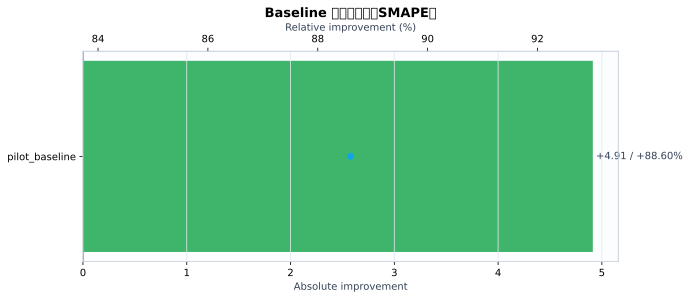
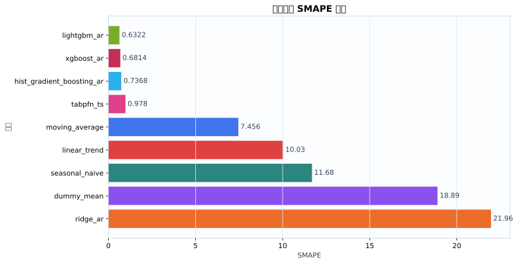
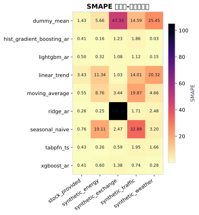
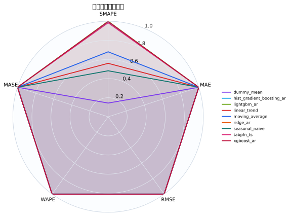
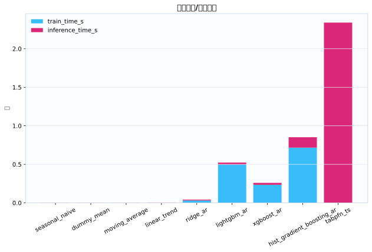
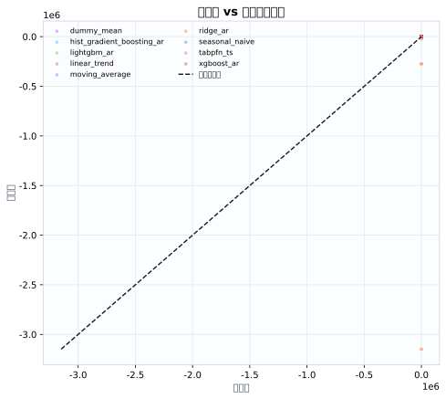
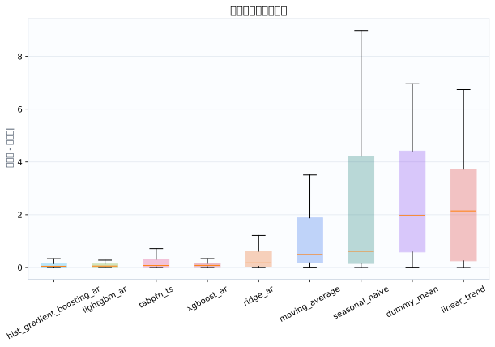

数据集5
模型9
指标行数45
预测行数1512
结论摘要
- 主指标 SMAPE 下，当前 run 的最佳模型是 lightgbm_ar，平均值为 0.6322。
- 相对 baseline pilot_baseline，当前最佳模型在 SMAPE 上提升 88.60% （absolute=+4.913）。
核心指标卡片
SMAPE
0.6322
最佳模型: lightgbm_ar
GPU_MEMORY_MB
0
最佳模型: dummy_mean
INFERENCE_TIME_S
0.003877
最佳模型: seasonal_naive
MAE
0.1211
最佳模型: xgboost_ar
MASE
0.3612
最佳模型: lightgbm_ar
MSE
0.03231
最佳模型: xgboost_ar
RMSE
0.1576
最佳模型: xgboost_ar
TRAIN_TIME_S
0
最佳模型: tabpfn_ts
Baseline 对比
| baseline | metric | current_model | current_value | baseline_model | baseline_value | absolute_difference | relative_improvement_pct |
|---|---|---|---|---|---|---|---|
| pilot_baseline | smape | lightgbm_ar | 0.6322 | ridge_ar | 5.545 | 4.913 | 88.6 |
动态交互图表
指标排名动态图
残差直方图
效率-精度散点图
数据集排名轨迹
Matplotlib 可视化图表
Baseline 改变量图
{kind=link}

Baseline/模型平均指标柱状图
{kind=link}

数据集-模型热力图
{kind=link}

多指标雷达图
{kind=link}

运行时间图
{kind=link}

真实值-预测值散点图
{kind=link}

残差箱线图
{kind=link}

训练过程曲线
N/A：当前 run 目录未发现 loss/accuracy/TensorBoard/wandb 训练曲线文件。
错误分析与样本分析
当前支持预测任务的残差与真实-预测散点分析；分类 confusion matrix / ROC / PR 曲线需要真实分类输出后自动启用。
原始 Metrics
| run_id | model | dataset | domain | horizon | context_length | mse | mae | rmse | smape | wape | mase | train_time_s | inference_time_s | gpu_memory_mb |
|---|---|---|---|---|---|---|---|---|---|---|---|---|---|---|
| tabpfn_ts_20260528_155349 | dummy_mean | synthetic_energy | energy | 12 | 384 | 1.133 | 0.7925 | 1.064 | 5.658 | 5.626 | 1.75 | 0.000468 | 0.003722 | 0 |
| tabpfn_ts_20260528_155349 | seasonal_naive | synthetic_energy | energy | 12 | 384 | 11.04 | 2.965 | 3.322 | 19.11 | 21.05 | 6.546 | 0.0003121 | 0.003348 | 0 |
| tabpfn_ts_20260528_155349 | moving_average | synthetic_energy | energy | 12 | 384 | 2.088 | 1.264 | 1.445 | 8.756 | 8.973 | 2.791 | 0.0002904 | 0.003397 | 0 |
| tabpfn_ts_20260528_155349 | linear_trend | synthetic_energy | energy | 12 | 384 | 3.399 | 1.667 | 1.844 | 11.34 | 11.83 | 3.68 | 0.0003322 | 0.003783 | 0 |
| tabpfn_ts_20260528_155349 | ridge_ar | synthetic_energy | energy | 12 | 384 | 0.002365 | 0.03524 | 0.04863 | 0.2465 | 0.2502 | 0.07781 | 0.01996 | 0.009237 | 0 |
| tabpfn_ts_20260528_155349 | hist_gradient_boosting_ar | synthetic_energy | energy | 12 | 384 | 0.0006871 | 0.0228 | 0.02621 | 0.161 | 0.1619 | 0.05034 | 0.62 | 0.1477 | 0 |
| tabpfn_ts_20260528_155349 | lightgbm_ar | synthetic_energy | energy | 12 | 384 | 0.002609 | 0.04472 | 0.05108 | 0.3248 | 0.3175 | 0.09874 | 0.5037 | 0.02588 | 0 |
| tabpfn_ts_20260528_155349 | xgboost_ar | synthetic_energy | energy | 12 | 384 | 0.009334 | 0.08221 | 0.09661 | 0.5973 | 0.5836 | 0.1815 | 0.2531 | 0.02395 | 0 |
| tabpfn_ts_20260528_155349 | tabpfn_ts | synthetic_energy | energy | 12 | 384 | 0.001962 | 0.0352 | 0.0443 | 0.2586 | 0.2499 | 0.07772 | 0 | 3.806 | 0 |
| tabpfn_ts_20260528_155349 | dummy_mean | synthetic_traffic | traffic | 12 | 384 | 22.8 | 4.25 | 4.775 | 14.59 | 15.27 | 2.985 | 0.00074 | 0.004563 | 0 |
| tabpfn_ts_20260528_155349 | seasonal_naive | synthetic_traffic | traffic | 12 | 384 | 145.5 | 10.93 | 12.06 | 32.88 | 39.28 | 7.679 | 0.0004032 | 0.004587 | 0 |
| tabpfn_ts_20260528_155349 | moving_average | synthetic_traffic | traffic | 12 | 384 | 42.87 | 6.005 | 6.548 | 19.87 | 21.57 | 4.217 | 0.0003966 | 0.004826 | 0 |
| tabpfn_ts_20260528_155349 | linear_trend | synthetic_traffic | traffic | 12 | 384 | 21.08 | 4.066 | 4.591 | 14.01 | 14.61 | 2.856 | 0.0004018 | 0.005069 | 0 |
| tabpfn_ts_20260528_155349 | ridge_ar | synthetic_traffic | traffic | 12 | 384 | 0.2598 | 0.4675 | 0.5097 | 1.715 | 1.68 | 0.3284 | 0.02766 | 0.01276 | 0 |
| tabpfn_ts_20260528_155349 | hist_gradient_boosting_ar | synthetic_traffic | traffic | 12 | 384 | 0.373 | 0.5075 | 0.6108 | 1.856 | 1.823 | 0.3564 | 0.6157 | 0.1579 | 0 |
| tabpfn_ts_20260528_155349 | lightgbm_ar | synthetic_traffic | traffic | 12 | 384 | 0.1752 | 0.3011 | 0.4186 | 1.118 | 1.082 | 0.2115 | 0.5064 | 0.03157 | 0 |
| tabpfn_ts_20260528_155349 | xgboost_ar | synthetic_traffic | traffic | 12 | 384 | 0.07136 | 0.1967 | 0.2671 | 0.7352 | 0.7066 | 0.1381 | 0.2154 | 0.0267 | 0 |
| tabpfn_ts_20260528_155349 | tabpfn_ts | synthetic_traffic | traffic | 12 | 384 | 0.6307 | 0.5498 | 0.7942 | 1.945 | 1.975 | 0.3861 | 0 | 2.357 | 0 |
| tabpfn_ts_20260528_155349 | dummy_mean | synthetic_weather | weather | 12 | 384 | 28.42 | 5.315 | 5.331 | 25.45 | 22.58 | 25.97 | 0.0004847 | 0.003209 | 0 |
| tabpfn_ts_20260528_155349 | seasonal_naive | synthetic_weather | weather | 12 | 384 | 0.7422 | 0.7493 | 0.8615 | 3.199 | 3.183 | 3.66 | 0.0003933 | 0.003402 | 0 |
| tabpfn_ts_20260528_155349 | moving_average | synthetic_weather | weather | 12 | 384 | 1.325 | 1.076 | 1.151 | 4.664 | 4.57 | 5.256 | 0.0003852 | 0.003319 | 0 |
| tabpfn_ts_20260528_155349 | linear_trend | synthetic_weather | weather | 12 | 384 | 19.04 | 4.342 | 4.363 | 20.32 | 18.45 | 21.21 | 0.0003831 | 0.003572 | 0 |
| tabpfn_ts_20260528_155349 | ridge_ar | synthetic_weather | weather | 12 | 384 | 0.4797 | 0.5876 | 0.6926 | 2.481 | 2.496 | 2.871 | 0.03118 | 0.008652 | 0 |
| tabpfn_ts_20260528_155349 | hist_gradient_boosting_ar | synthetic_weather | weather | 12 | 384 | 5.736e-05 | 0.005951 | 0.007574 | 0.02534 | 0.02528 | 0.02907 | 0.7149 | 0.1055 | 0 |
| tabpfn_ts_20260528_155349 | lightgbm_ar | synthetic_weather | weather | 12 | 384 | 0.002361 | 0.03401 | 0.04859 | 0.1454 | 0.1445 | 0.1661 | 0.513 | 0.02097 | 0 |
| tabpfn_ts_20260528_155349 | xgboost_ar | synthetic_weather | weather | 12 | 384 | 0.006525 | 0.06545 | 0.08078 | 0.2822 | 0.278 | 0.3197 | 0.2265 | 0.02266 | 0 |
| tabpfn_ts_20260528_155349 | tabpfn_ts | synthetic_weather | weather | 12 | 384 | 0.2528 | 0.3911 | 0.5028 | 1.662 | 1.661 | 1.911 | 0 | 1.563 | 0 |
| tabpfn_ts_20260528_155349 | dummy_mean | synthetic_exchange | economics | 12 | 384 | 3.904 | 1.975 | 1.976 | 47.33 | 38.28 | 44.85 | 0.000517 | 0.004445 | 0 |
| tabpfn_ts_20260528_155349 | seasonal_naive | synthetic_exchange | economics | 12 | 384 | 0.02396 | 0.1259 | 0.1548 | 2.473 | 2.44 | 2.858 | 0.0004286 | 0.004636 | 0 |
| tabpfn_ts_20260528_155349 | moving_average | synthetic_exchange | economics | 12 | 384 | 0.03386 | 0.1748 | 0.184 | 3.44 | 3.387 | 3.969 | 0.0004116 | 0.004729 | 0 |
| tabpfn_ts_20260528_155349 | linear_trend | synthetic_exchange | economics | 12 | 384 | 0.003409 | 0.05322 | 0.05838 | 1.031 | 1.031 | 1.209 | 0.0004308 | 0.00516 | 0 |
| tabpfn_ts_20260528_155349 | ridge_ar | synthetic_exchange | economics | 12 | 384 | 8.324e+11 | 2.874e+05 | 9.124e+05 | 105.1 | 5.57e+06 | 6.526e+06 | 0.0464 | 0.01257 | 0 |
| tabpfn_ts_20260528_155349 | hist_gradient_boosting_ar | synthetic_exchange | economics | 12 | 384 | 0.005649 | 0.06328 | 0.07516 | 1.228 | 1.226 | 1.437 | 0.9045 | 0.1452 | 0 |
| tabpfn_ts_20260528_155349 | lightgbm_ar | synthetic_exchange | economics | 12 | 384 | 0.004454 | 0.05551 | 0.06674 | 1.077 | 1.076 | 1.261 | 0.4875 | 0.0211 | 0 |
| tabpfn_ts_20260528_155349 | xgboost_ar | synthetic_exchange | economics | 12 | 384 | 0.007023 | 0.07112 | 0.0838 | 1.382 | 1.378 | 1.615 | 0.2467 | 0.0246 | 0 |
| tabpfn_ts_20260528_155349 | tabpfn_ts | synthetic_exchange | economics | 12 | 384 | 0.001467 | 0.03067 | 0.03831 | 0.5933 | 0.5943 | 0.6963 | 0 | 1.795 | 0 |
| tabpfn_ts_20260528_155349 | dummy_mean | stock_provided | finance | 12 | 384 | 1.699 | 0.8152 | 1.303 | 1.428 | 1.71 | 0.2308 | 0.0004656 | 0.003568 | 0 |
| tabpfn_ts_20260528_155349 | seasonal_naive | stock_provided | finance | 12 | 384 | 0.1452 | 0.2786 | 0.381 | 0.7645 | 0.5844 | 0.07886 | 0.0003192 | 0.003414 | 0 |
| tabpfn_ts_20260528_155349 | moving_average | stock_provided | finance | 12 | 384 | 0.07349 | 0.1996 | 0.2711 | 0.5478 | 0.4186 | 0.05649 | 0.0003056 | 0.00346 | 0 |
| tabpfn_ts_20260528_155349 | linear_trend | stock_provided | finance | 12 | 384 | 3.482 | 1.603 | 1.866 | 3.43 | 3.362 | 0.4536 | 0.0002994 | 0.003857 | 0 |
| tabpfn_ts_20260528_155349 | ridge_ar | stock_provided | finance | 12 | 384 | 0.0197 | 0.09908 | 0.1404 | 0.2633 | 0.2078 | 0.02805 | 0.03335 | 0.009251 | 0 |
| tabpfn_ts_20260528_155349 | hist_gradient_boosting_ar | stock_provided | finance | 12 | 384 | 0.07328 | 0.1785 | 0.2707 | 0.4137 | 0.3745 | 0.05054 | 0.7293 | 0.1179 | 0 |
| tabpfn_ts_20260528_155349 | lightgbm_ar | stock_provided | finance | 12 | 384 | 0.1128 | 0.2446 | 0.3359 | 0.4961 | 0.5131 | 0.06924 | 0.4827 | 0.02184 | 0 |
| tabpfn_ts_20260528_155349 | xgboost_ar | stock_provided | finance | 12 | 384 | 0.06731 | 0.1901 | 0.2594 | 0.4101 | 0.3988 | 0.05382 | 0.2326 | 0.0269 | 0 |
| tabpfn_ts_20260528_155349 | tabpfn_ts | stock_provided | finance | 12 | 384 | 0.0728 | 0.2157 | 0.2698 | 0.4308 | 0.4524 | 0.06104 | 0 | 2.176 | 0 |
配置参数
展开/折叠配置
{
"/home/wanyi/zy_test/tabpfn-ts-benchmark/configs/config.yaml": {
"defaults": [
{
"dataset": "etth1"
},
{
"model": "seasonal_naive"
},
{
"experiment": "e1_zeroshot"
},
"_self_"
],
"seed": 42,
"output_dir": "results",
"wandb": {
"project": "tabpfn-quant",
"mode": "offline",
"entity": null
},
"hydra": {
"run": {
"dir": "outputs/${now:%Y-%m-%d}/${now:%H-%M-%S}"
}
}
}
}运行环境
{
"python": "3.10.12",
"platform": "Linux-6.8.0-111-generic-x86_64-with-glibc2.35",
"git_head": "N/A",
"git_dirty": false
}Warnings
- 无
产物链接
- metrics.json
- summary.csv
- 源 run 目录: /home/wanyi/zy_test/tabpfn-ts-benchmark/results/full_benchmark_v2_c384_h12_s3
- 主指标: smape